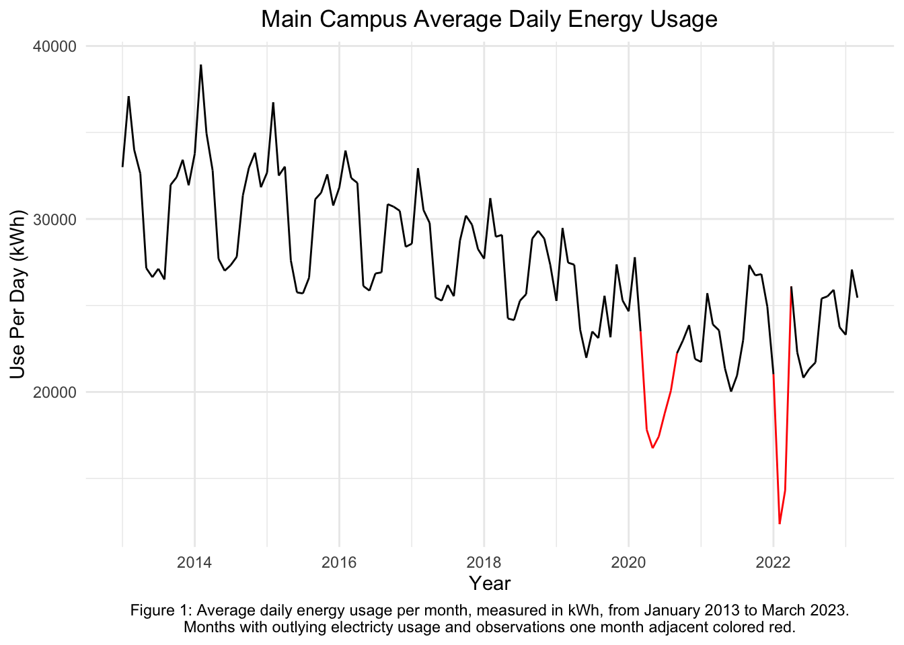
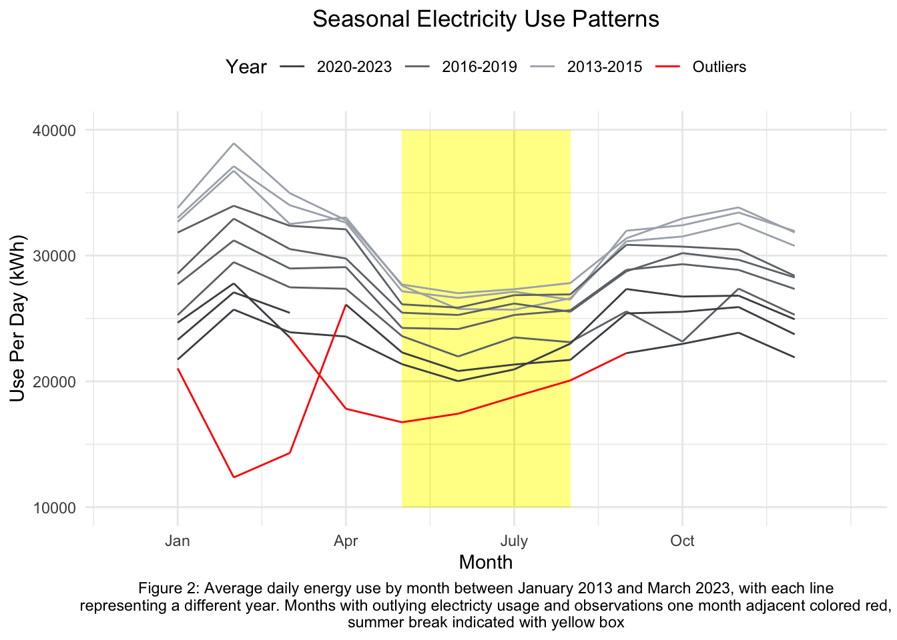
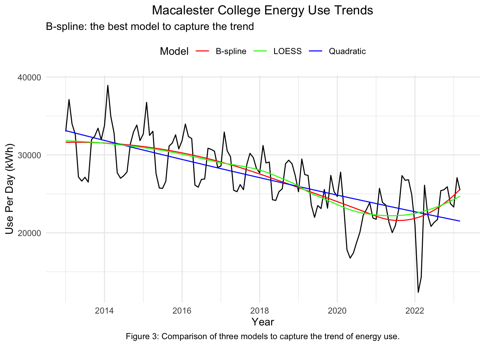
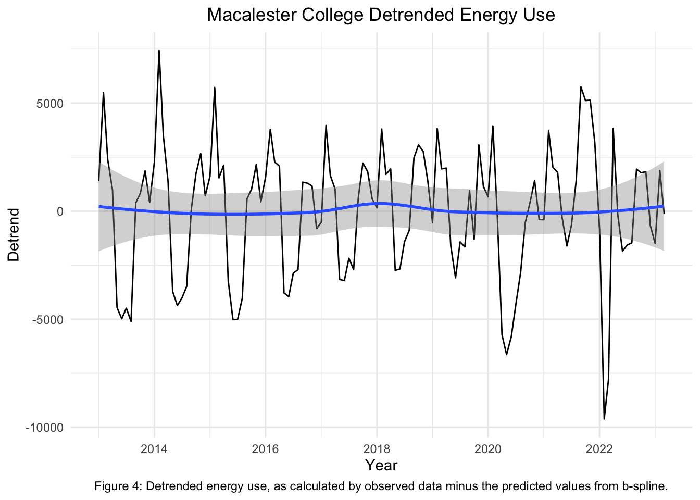
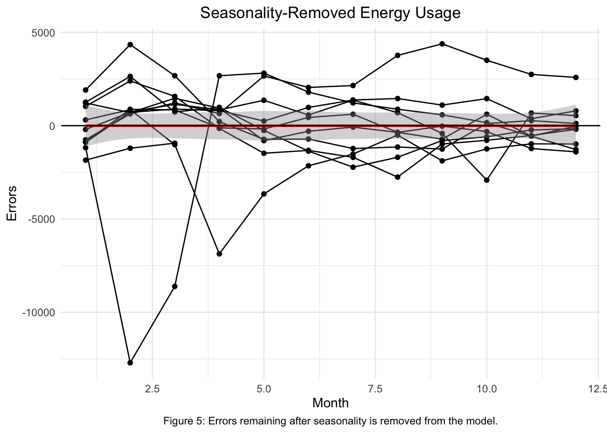
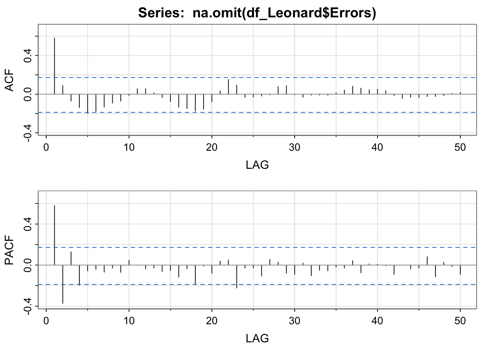
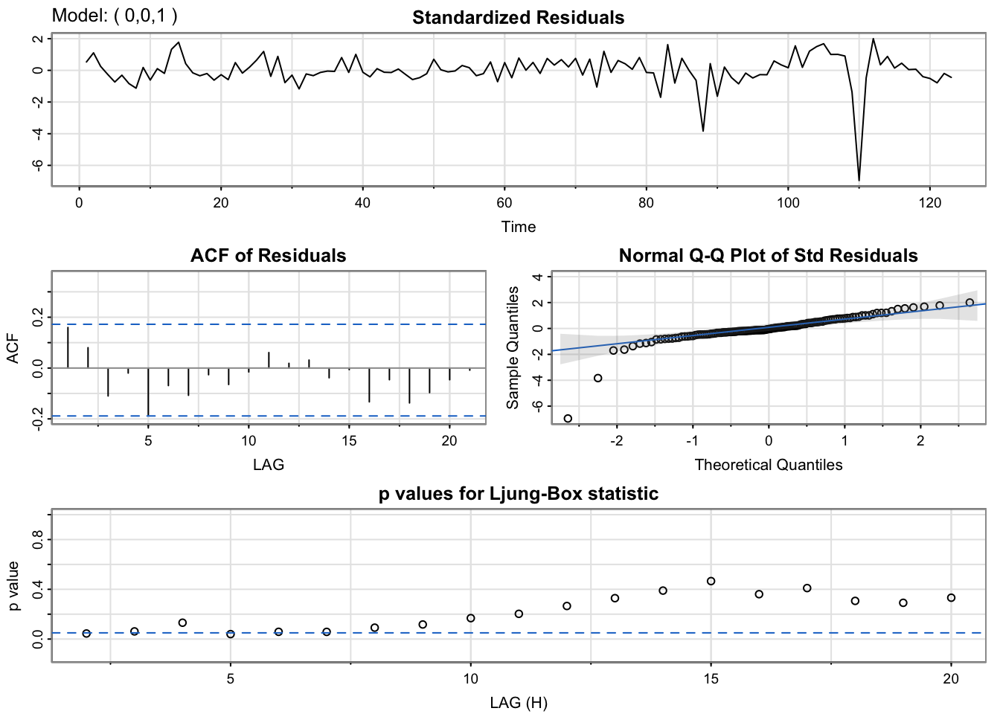
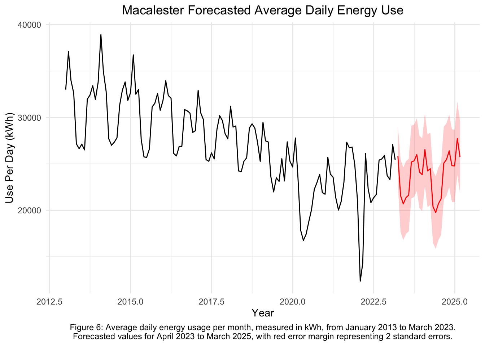

Time Series Analysis of Macalester Main Campus Electricity Usage
Correlated Data
Time Series Data
R
Case study of Macalester College in St. Paul, MN uses time series analysis to model and forecast energy use using the campus’ main meter.
Introduction
To combat the harmful effects of climate change, many post-secondary institutions across the world are seeking to reduce their energy use and invest in renewable energy sources. At Macalester College, several initiatives are ongoing to reduce the institution’s carbon footprint, including the pursuit of zero waste, significant reductions of carbon emissions, and investment in solar and wind energy sources. Many of these initiatives connect to the college’s larger goal of achieving carbon neutrality by 2025. (“College Commitments and Accomplishments,” n.d.) However, this goal is currently being re-evaluated due to ongoing challenges in implementation strategies and concerns about the long-term sustainability of the project. According to a Mac Weekly article, achieving this goal by 2025 “would necessitate a 2.9% annual reduction in carbon emissions.” (Porter and Diaz 2023) Following the COVID-19 pandemic, it is unclear if continuing to pursue these goals will be the best way for Macalester to make a positive impact in reducing its carbon footprint and improving its sustainability and if it would even be possible to do so given current levels of demand for electricity use on the campus. This report aims to provide context for the college’s levels of electricity use as it relates to their long-term goal of carbon neutrality. We aim to shed light on trends in Macalester College’s electricity use by analyzing the Campus’ Main Electric Meter since 2013 using time series analysis techniques and forecast Macalester’s electricity use over the next two years using SARIMA modeling.
Methods
To assess Macalester’s electricity usage over time, the college uses Energy Star Portfolio Manager to track campus buildings’ energy outputs. Macalester collects data across several electricity meters, some of which measure off-campus student and faculty housing and other property owned by the college. This report includes only the main-campus electricity meter, which is listed under the address of the Leonard Center for Athletics. This meter measures energy output for all main campus buildings including residence halls, academic buildings, athletic complexes, and other on-campus office spaces. The meter aggregates measurements monthly, measuring the total energy usage between the first and last day of the month in kilowatt-hours. (“Energy Star Portfolio Manager,” n.d.) The raw data was then pre-processed to yield the daily average energy use for each month between the first entry in January 2013 and the most recent in March 2023.
Time series analysis on the data was carried out by identifying and removing the trend and seasonality from the data to estimate the true error process. Analyzing the trend of Macalester’s energy use helps to contextualize ongoing sustainability and carbon reduction initiatives; analyzing the seasonality sheds light on yearly patterns in energy usage. To estimate trend, we use a b-spline of degree 2 with 2 knots in January 2018 and January 2021, meaning we fit a piecewise function with three components, one modeling the data until January 2018, one modeling between January 2018 and January 2021, and the other modeling after. (Boor 1972)
To capture the seasonality, the detrended data was modeled by linear regression with explanatory variables month and semester, a binary variable indicating whether the majority of the month took place during the academic year. Three outlying measurements in 2020 and 2022 were retained as they had no discernible impact on the model. Furthermore, the Macalester College annual energy use reports for 2020 and 2022 revealed substantial multi-site electricity equipment updates across the main campus, including the Carnegie Hall Transformer, Wallace Library Rare Books Liebert Unit, Rice/Olin Lab Exhaust Fan Replacement, 77 Mac Boiler Replacement, LED Lighting Retrofit Projects, and more (“Macalester Energy Management,” n.d.). These updates contributed to energy savings. This information indicates that the three outliers were not a result of measurement errors, equipment failures, or significant machinery changes leading to a reduced output. Consequently, we did not include these outliers in the model, as the Macalester report suggests that they were functioning properly and should be considered part of the overall seasonality pattern going forward.
Following the removal of seasonality, the remaining errors were analyzed to discern any remaining patterns not captured by trend and seasonality models. These errors were then modeled using several candidate AR, MA, and ARMA models, evaluating the most appropriate choice through the sample autocorrelation function, the sample partial autocorrelation function, normalized Q-Q plots, p-values for the Ljung-Box statistic (a test to see if sample autocorrelations are nonzero), and BIC (a measure of goodness of fit). (Schwarz (1978)) Finally, the candidate model incorporating trend, seasonality, and errors was fit and predictions for the next 24 months were made using the sarima.for function in R.
Results
Cursory analysis shows a consistent downward trend in electricity consumption at Macalester College over the past decade. Figure 1 highlights this trend as well as periodic patterns within each year. It also highlights two outlying values in 2020 and 2022 due to update in equipment across main campus.

The seasonal variations can be seen in Figure 2, which highlights that energy use tends to be higher in the winter months and lower in the summer months, when demand for energy is lower due to the lack of students on-campus and need for constant heating.
Warning in geom_rect(aes(xmin = 5, xmax = 8, ymin = 10000, ymax = 40000), : All aesthetics have length 1, but the data has 123 rows.
ℹ Please consider using `annotate()` or provide this layer with data containing
a single row.
To capture the trend, we use three candidate models: a b-spline with 2 degrees and 2 knots, positioned in January 2018 and January 2021 respectively, a polynomial regression, and local regression. Polynomial regression, with degree 3 at least, does not really seem to capture the trend, but rather picks up on an overall decrease from the beginning of the data to the end. The local regression & b-spline are fairly comparable, but we opt to use the b-spline because it is more interpretable and straightforward to use for prediction in an external context. Figure 4 shows the detrended energy use for Macalester College’s main campus meter. There is no significant pattern around zero that comes as a result of the trend, as can be seen from the relatively constant horizontal trendline. The plot highlights the seasonal variations, which show higher energy use in winter months and lower energy use in the summer.


Following the removal of the trend with the b-spline, we remove the seasonality by modeling the detrended energy usage as a function of month and semester status (ie, was the month during an academic semester or not). We did not remove three outliers values in 2020 and 2022, as they did not impact our seasonal model and as they were were functioning properly thanks to equipment updates. Additionally, we attempted to incorporate these outliers, but the PACF and ACF plots did not yield as favorable results as the current model without their inclusion. Furthermore, we chose not to use differencing because it did not fully remove the seasonality, leaving a heteroskedastic pattern of residuals. In Figure 5, the residuals are plotted, showing no trend around zero, with the horizontal average relatively constant. This indicates that we have successfully removed seasonality.

Next, we seek to model the remaining correlated noise. To do so, we analyze the ACF and PACF. The ACF drops to zero after lag 1, and the PACF plot decays/drops to zero after lag 2. The effective value of the ACF and PACF is below zero after lag 1 & lag 2 respectively, although it oscillates within the band indicated by the blue dashed line.

To model the errors, we tried using MA(1) model because the PACF decayed to zero, assuming that the ACF dropped to zero after one lag. This gives an indication that MA(1) might be a good model to use. However, we also wanted to try the other models because it is not necessarily clear whether the PACF drops or decays to zero after lag 2. As such, we also tried AR(2) by assuming that the ACF actually decayed to zero. Finally, we wanted to try an ARMA model, adjusting the parameters based on the coefficients of the MA & AR models, to see if it might produce a more accurate and/or simpler model.

After fitting all 3 models, we find that they all have similar BIC values (AR(2): 17.72942, MA(1): 17.70742, ARMA: 17.70663), indicating that they all fit the data relatively well. Q-Q plots indicate that all the models fit fairly well, and the residual plot shows that there is only one large outlier, constant across all models. The p-values are highest for the ARMA model, but seem to be around or below 0.05 for almost all values of all models. Thus, we opted for the simplest model, MA(1), as we determine that the goodness of fit is not improved enough in more complicated models.
Using the MA(1) model in conjunction with the above trend and seasonality models, we can generate a complete time series model that can be used for future forecasting. Forecasts are displayed in Figure 6 for two years after the end of the measurement period, with two standard errors displayed in red.

Conclusions
Using a b-spline to predict the trend, modeling seasonality based on both month and semester status, and employing an MA(1) model to address errors, we consistently obtain predicted energy values after March 2023. These predictions also align with the previously observed seasonal patterns. Consequently, our forecast suggests that Macalester College will maintain a stable energy consumption pattern over the next two years, with the previous decreasing trends expected to continue. However, the forecast also indicates a slight long-term increase in energy usage, especially in 2025, while still retaining seasonal variations. These predictions are consistent with practical expectations, given the ongoing updates to the campus’s electrical equipment.
Despite the alignment of our predictions with expectations, it’s worth noting that the b-spline may exhibit overfitting to our current data. This is particularly evident in the post-2021 portion of the piecewise function, which contains relatively less data. Future projects could improve model fitting by incorporating more data from after 2021. Nevertheless, with the given data, our model appears to be reasonably robust. The forecasted model continues to suggest a steady trend in energy use, with seasonal variations remaining highest in the winter months and lowest in the summer months.
References
Boor, Carl de. 1972. “Subroutine Package for Calculating with b-Splines.” Journal of Approximation Theory 6: 50–62. https://doi.org/10.2172/4740859.
Box, G. E., and David A. Pierce. 1970. “Distribution of Residual Autocorrelations in Autoregressive-Integrated Moving Average Time Series Models.” Journal of the American Statistical Association 65 (332): 1509–26. https://doi.org/10.1080/01621459.1970.10481180.
“College Commitments and Accomplishments.” n.d. Macalester College. https://www.macalester.edu/sustainability/college-commitments-2/.
“Energy Star Portfolio Manager.” n.d. Energy Star, EPA. https://portfoliomanager.energystar.gov/pm/login.
“Macalester Energy Management.” n.d. Macalester. (n.d.). https://www.macalester.edu/facilities/energy/.
Porter, Ben, and Lucy Diaz. 2023. “Diversion, Energy & Carbon Neutrality: Sustainability and Facilities Look to the Future.” The Mac Weekly. https://themacweekly.com/80763/news/diversion-energy-carbon-neutrality/.
Schwarz, Gideon. 1978. “Estimating the Dimension of a Model.” The Annals of Statistics 6 (2). https://doi.org/10.1214/aos/1176344136.